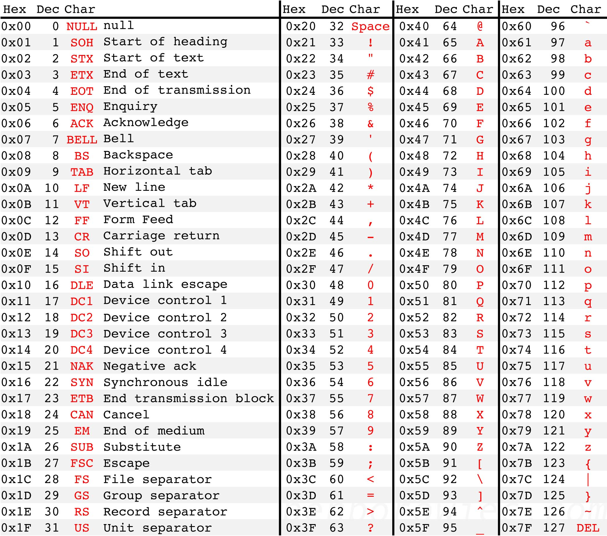

Getting Started
Welcome to the "Rust Language Examples" documentation. This is supporting material for the Rust Tech Talk conducted for the Dayton Dynamic Languages SIG.
Setup
The best way to set up and maintain a Rust installation is to use the rustup tool.
If you're running Linux, it's a one-line command. Run this, and follow the prompts:
curl --proto '=https' --tlsv1.2 -sSf https://sh.rustup.rs | sh
If you are installing in Windows, you may also need to install the Visual Studio Build Tools. The rustup CLI will prompt you if this is the case.
After you've installed Rust, you can update to the latest version at any time by running
rustup update.
After rustup finishes, test your installation by running rustc --version. You should see something like this:
rustc 1.63.0 (4b91a6ea7 2022-08-08)
If you'd like to actually test the compiler, create a file named main.rs, with the following contents:
fn main() {
println!("Hello, world!");
}
Then, run this:
rustc main.rs
This will produce a binary file called main. When you run it, you should see this:
Hello, world!
Learn more: https://www.rust-lang.org/learn/get-started
Cargo
Cargo is the Rust build tool and package manager. It allows you to do things like this:
| Command | Description |
|---|---|
cargo new | Create a new Rust project |
cargo build | Build a project |
cargo run | Run a project |
cargo test | Execute unit tests in a project |
cargo doc | Build documentation for a project |
cargo publish | Publish a project to crates.io |
For example, to create new Rust binary project, run the following:
cargo new [project_name]
This will scaffold a new project with the following structure:
[project_name]
.
├── Cargo.toml
└── src
└── main.rs
Learn more: https://doc.rust-lang.org/stable/cargo/
Crates Registry
The Crates Registry (located at https://crates.io/) is a catalog of thousands of Rust libraries that you can add to your Rust projects. It is comparable to the library and package catalogs for other languages:
| Language | Catalog |
|---|---|
| .NET | Nuget |
| Node.js | npm Registry |
| Perl | CPAN |
| Python | PyPI |
| Ruby | RubyGems |
If, for example, you'd like to add the rand library to your project, you can execute Cargo in your project directory like this:
cargo add rand
This will add an entry for the library to your project's Cargo.toml file. You could also add the entry to Cargo.toml manually:
[dependencies]
rand = "0.8.5"
Declarations and Data Types
Declarations
Statically Typed
Rust is statically typed. Variables must be declared. If a type is not specified, Rust will try to infer it.
fn main() { let my_variable1: i32 = 5; // Explicit i32 let my_variable2 = 5; // Inferred i32 println!("The value of my_variable1 is {}", my_variable1); println!("The value of my_variable2 is {}", my_variable2); }
Type Conversion
There is no implicit type conversion in Rust:
fn main() { // This won't work, because the 5.0 will be treated as a float: let my_variable: i32 = 5.0; println!("The value of my_variable is {}", my_variable); }
But, you can use casting for explicit conversion:
fn main() { let my_variable: i32 = 5.0 as i32; println!("The value of my_variable is {}", my_variable); }
Mutability
Variables are immutable by default:
fn main() { let my_variable: i32 = 5; println!("The value of my_variable is {}", my_variable); let my_variable = 10; // This works, because 'let' creates a new instance of // the variable. println!("The value of my_variable is {}", my_variable); my_variable = 15; // This does NOT work, because it attempts to assign a value // to the existing instance of the immutable variable. println!("The value of my_variable is {}", my_variable); }
If you want variables to be mutable, use the mut keyword:
fn main() { let mut my_variable: i32 = 5; println!("The value of my_variable is {}", my_variable); my_variable = 10; println!("The value of my_variable is {}", my_variable); }
Scalar Types
The scalar types in Rust are integers, floating point, chars, and booleans.
Learn more: https://doc.rust-lang.org/book/ch03-02-data-types.html#scalar-types
Integer
Integer types:
| Length | Signed | Unsigned |
|---|---|---|
| 8-bit | i8 | u8 |
| 16-bit | i16 | u16 |
| 32-bit | i32 | u32 |
| 64-bit | i64 | u64 |
| 128-bit | i128 | u128 |
| arch | isize | usize |
Integer literals:
fn main() { let decimal_value:i32 = 98_222; println!("Decimal 98_222 is integer {}", decimal_value); let hex_value: i32 = 0xff; println!("Hex 0xff is integer {}", hex_value); let octal_value: i32 = 0o77; println!("Octal 0o77 is integer {}", octal_value); let binary_value: i32 = 0b0111; println!("Binary 0b0111 is integer {}", binary_value); let byte_value: u8 = b'A'; println!("Byte b'A' is integer {}", byte_value); }
Floating Point
Rust supports two floating point types: f32 (32 bits) and f64 (64 bits).
fn main() { let float_var1: f32 = 10.0; let float_var2 = 20.0; // defaults to f64 }
Character
The char type is Rust's most primitive alphabetic type.
fn main() { let my_char = 'a'; println!("The value of my_char is {}", my_char); }
In Rust, char type assignments are enclosed in single quotes, and strings are enclosed in double quotes:
fn main() { let mut my_char = 'a'; let my_string = "a"; my_char = "b"; // This will fail! }
Boolean
Boolean types in Rust have two possible values: true and false. They are one byte in size.
fn main() { let my_bool1 = true; // inferred type let my_bool2: bool = false; // explicit type annotation }
Compound Types
The two primitive compound types in Rust are tuples and arrays.
Tuple
A tuple provides a means of grouping several values with a variety of types into one compound type.
fn main() { let my_tuple1 = (20, 27.4); let my_tuple2: (i32, f64) = (10, 12.22); println!("{}", my_tuple1); // This will fail: The Display trait used by println! // doesn't know how to handle tuples. }
Unsupported display types can be handled like this:
fn main() { let my_tuple1 = (20, 27.4); // Inferred type let my_tuple2: (i32, f64) = (10, 12.22); // Explicit type println!("Flexible formatting print: {:?}", my_tuple1); // Specify ':?' as // the format println!("Pretty print: {:#?}", my_tuple1); // Specify ':#?' for // pretty-print }
Learn more: https://doc.rust-lang.org/book/ch03-02-data-types.html#the-tuple-type
Array
Arrays in Rust are similar to tuples, except that all elements must have the same type. They are fixed length.
fn main() { let my_array1 = [1,2,3,4,5]; // Inferred type and length let my_array2: [i32; 5] = [1,2,3,4,5]; // Explicit type and length println!("The contents of my_array1 are {:?}", my_array1); println!("The contents of my_array2 are {:?}", my_array2); }
Learn more: https://doc.rust-lang.org/book/ch03-02-data-types.html#the-array-type
Custom Types
Structures
Rust supports three types of structures:
- Named tuples
- Classic C structs
- Unit structs (useful for generics)
Tuple example:
fn main() { struct TupleExample(i32, f32); // Instanciate: let tuple_example = TupleExample(1, 2.2); // Access the fields by position: println!("tuple_example contains {:?} and {:?}", tuple_example.0, tuple_example.1); // Destructure: let TupleExample(integer_field, decimal_field) = tuple_example; println!("tuple_example contains {:?} and {:?}", integer_field, decimal_field); }
Classic example:
fn main() { struct ClassicExample { string_field: String, integer_field: u8, } let classic_example: ClassicExample = ClassicExample { string_field: String::from("A String value"), integer_field: 10 }; println!("classic_example values: ({}, {})", classic_example.string_field, classic_example.integer_field); }
Unit example:
fn main() { struct UnitExample; let _unit_example = UnitExample; }
Unit structs have no fields, and are useful in generics.
Note the use of the underscore in
_unit_example, indicating to the compiler that the variable is intentionally unused.
Learn more: https://doc.rust-lang.org/stable/rust-by-example/custom_types/structs.html
Enums
There are a few variants of the enum type. Here's the simplest:
fn main() { enum EventStatus { OK, Failed } let my_result = EventStatus::OK; match my_result { EventStatus::OK => println!("Finished successfully!"), EventStatus::Failed => println!("Failed..."), } }
Learn more: https://doc.rust-lang.org/stable/rust-by-example/custom_types/enum.html
Standard Library Types
The Rust std library expands on primitives with a large number of custom types.
Learn more: https://doc.rust-lang.org/stable/rust-by-example/std.html
Strings
Rust supports two string types: String and &str. A String is a vector of bytes (Vec<u8>), and &str is a slice (&[u8]) pointing to a UTF-8 sequence.
fn main() { // Create a reference to a string in read-only memory: let string_slice: &'static str = "This is a string reference"; println!("The value of string_slice is {}", string_slice); let mut vector_string: String = "This is a string vector".to_string(); println!("The value of vector_string is {}", vector_string); }
[Exercise] What happens if you try to assign a new value to string_slice?
Learn more: https://doc.rust-lang.org/stable/rust-by-example/std/str.html
Standard Library - Misc
The standard library provides additional complex types to support things like:
- Threads
- Channels
- File I/O
- Program Arguments
- Foreign Function Interface
You can find enhanced alternatives for many of these by visiting crates.io. For example,
clapis a popular crate for working with program arguments.
Learn more: https://doc.rust-lang.org/stable/rust-by-example/std_misc.html
File I/O - Open
use std::fs::File;
use std::io::prelude::*;
use std::path::Path;
fn main() {
// Create a path to the desired file
let path = Path::new("hello.txt");
let display = path.display();
// Open the path in read-only mode, returns `io::Result<File>`
let mut file = match File::open(&path) {
Err(why) => panic!("couldn't open {}: {}", display, why),
Ok(file) => file,
};
// Read the file contents into a string, returns `io::Result<usize>`
let mut s = String::new();
match file.read_to_string(&mut s) {
Err(why) => panic!("couldn't read {}: {}", display, why),
Ok(_) => print!("{} contains:\n{}", display, s),
}
// `file` goes out of scope, and the "hello.txt" file gets closed
}
(Code example is copied directly from here.)
Flow Control
Rust provides a comprehensive set of keywords for managing flow of control.
Learn more: https://doc.rust-lang.org/stable/rust-by-example/flow_control.html
if/else
Note that the boolean condition does not have to be surrounded by parentheses.
fn main() { let conditional: i32 = 10; if conditional == 10 { println!("The value is 10"); } else { println!("The value is not 10"); } }
Learn more: https://doc.rust-lang.org/stable/rust-by-example/flow_control/if_else.html
loop
The loop keyword provides an infinite loop.
fn main() { let mut count:i32 = 0; loop { count += 1; if count == 5 { break; } if count == 3 { continue; } println!("Iteration: {}", count); } }
Learn more: https://doc.rust-lang.org/stable/rust-by-example/flow_control/loop.html
while
Loops while a condition is true.
fn main() { let mut count:i32 = 1; while count < 5 { println!("Iteration: {}", count); count += 1; } }
Learn more: https://doc.rust-lang.org/stable/rust-by-example/flow_control/while.html
for and range
The for in construct can be used to iterate through an Iterator. For a simple Iterator, a range can be used.
The upper value of the range is not inclusive.
fn main() { for item in 1..5 { println!("Iteration: {}", item); } }
Learn more: https://doc.rust-lang.org/stable/rust-by-example/flow_control/for.html
match
The match keyword provides pattern matching similar to a C switch.
fn main() { let number:i32 = 10; match number { 1 => println!("The value is one!"), 2 | 3 | 4 => println!("The value is two, three, or four (actual value: {})", number), 5..=8 => println!("The value is five, six, seven, or eight (actual value: {})", number), _ => println!("No special handling for {}", number), } }
Learn more: https://doc.rust-lang.org/stable/rust-by-example/flow_control/match.html
Functions
Functions are declared with the fn keyword. Arguments are type-annotated. If the function returns a value, it must be specified after an arrow.
The order of function definitions are not dependent on
main().
Let's start with some code that needs refactoring:
fn main() { println!("Hello, Jim!"); println!("Hello, John!"); let square_of_two:i32 = 2 * 2; let square_of_four:i32 = 4 * 4; println!("2 squared is {}", square_of_two); println!("4 squared is {}", square_of_four); }
We have two instances of code duplication that can be refactored into functions:
- The "Hello" greeting, and
- The calculation of squares.
Let's start with "Hello":
fn say_hello(name: String) { println!("Hello, {}!", name); } fn main() { say_hello("Jim".to_string()); say_hello("John".to_string()); let square_of_two:i32 = 2 * 2; let square_of_four:i32 = 4 * 4; println!("2 squared is {}", square_of_two); println!("4 squared is {}", square_of_four); }
Next, we'll add a function to handle calculating square values. We need a return value for this.
fn say_hello(name: String) { println!("Hello, {}!", name); } fn squared(input: i32) -> i32 { return input * input; } fn main() { say_hello("Jim".to_string()); say_hello("John".to_string()); let square_of_two:i32 = 2 * 2; let square_of_four:i32 = 4 * 4; println!("2 squared is {}", squared(2)); println!("4 squared is {}", squared(4)); }
Learn more: https://doc.rust-lang.org/stable/rust-by-example/fn.html
Methods
Functions can be connected to a type. They can be defined on the type ("associated functions") or called on an instance of a type ("methods").
Associated functions are generally used like constructors:
struct Data { x: f64, y: f64, } impl Data { fn new(x: f64, y: f64) -> Data { Data {x: x, y: y} } } fn main() { let data = Data::new(2.0, 2.0); println!("The value of data.x is {}", data.x); println!("The value of data.y is {}", data.y); }
Methods operate on an instance of a type:
struct Data { x: f64, y: f64, } impl Data { fn new(x: f64, y: f64) -> Data { Data {x: x, y: y} } // Methods use the built-in argument &self, which provides a reference to // an instance of the type. fn product(&self) -> f64 { return self.x * self.y; } } fn main() { let data = Data::new(2.0, 2.0); println!("The value of data.x is {}", data.x); println!("The value of data.y is {}", data.y); println!("The product of x and y is {}", data.product()); }
Learn more: https://doc.rust-lang.org/stable/rust-by-example/fn/methods.html
Traits
A trait is a collection of methods defined for an unknown type: Self. They define functionality meant to be shared with multiple types, similar to interfaces and abstract classes.
trait DataTrait { fn new(x: f64, y: f64) -> Self; fn product(&self) -> f64; } struct Data { x: f64, y: f64, } impl DataTrait for Data { fn new(x: f64, y: f64) -> Data { Data {x: x, y: y} } fn product(&self) -> f64 { return self.x * self.y; } } fn main() { let mut data: Data = DataTrait::new(2.0, 2.0); println!("The value of data.x is {}", data.x); println!("The value of data.y is {}", data.y); println!("The product of x and y is {}", data.product()); }
Learn more: https://doc.rust-lang.org/stable/rust-by-example/trait.html
Ownership
Learn more: https://doc.rust-lang.org/stable/book/ch04-00-understanding-ownership.html
RAII
Rust enforces RAII (Resource Acquisition Is Initialization), so whenever an object goes out of scope, its destructor is called and its owned resources are freed.
fn create_box() { // Allocate an integer on the heap let _box1 = Box::new(3i32); // `_box1` is destroyed here, and memory gets freed } fn main() { // Allocate an integer on the heap let _box2 = Box::new(5i32); // A nested scope: { // Allocate an integer on the heap let _box3 = Box::new(4i32); // `_box3` is destroyed here, and memory gets freed } // Creating lots of boxes just for fun // There's no need to manually free memory! for _ in 0u32..1_000 { create_box(); } // `_box2` is destroyed here, and memory gets freed }
Details here: https://doc.rust-lang.org/stable/rust-by-example/scope/raii.html.
Ownership and Moves
Resources can have only one owner. When ownership is transferred to a new owner, the previous owner can no longer be used.
// This function takes ownership of the heap allocated memory fn destroy_box(c: Box<i32>) { println!("Destroying a box that contains {}", c); // `c` is destroyed and the memory freed } fn main() { // _Stack_ allocated integer let x = 5u32; // *Copy* `x` into `y` - no resources are moved let y = x; // Both values can be independently used println!("x is {}, and y is {}", x, y); // `a` is a pointer to a _heap_ allocated integer let a = Box::new(5i32); println!("a contains: {}", a); // *Move* `a` into `b` let b = a; // The pointer address of `a` is copied (not the data) into `b`. // Both are now pointers to the same heap allocated data, but // `b` now owns it. // Error! `a` can no longer access the data, because it no longer owns the // heap memory //println!("a contains: {}", a); // TODO ^ Try uncommenting this line // This function takes ownership of the heap allocated memory from `b` destroy_box(b); // Since the heap memory has been freed at this point, this action would // result in dereferencing freed memory, but it's forbidden by the compiler // Error! Same reason as the previous Error //println!("b contains: {}", b); // TODO ^ Try uncommenting this line }
Details here: https://doc.rust-lang.org/stable/rust-by-example/scope/move.html
Borrowing
To access data without taking ownership of it, borrowing can be used. For this, objects are passed by reference instead of value.
// This function takes ownership of a box and destroys it fn eat_box_i32(boxed_i32: Box<i32>) { println!("Destroying box that contains {}", boxed_i32); } // This function borrows an i32 fn borrow_i32(borrowed_i32: &i32) { println!("This int is: {}", borrowed_i32); } fn main() { // Create a boxed i32, and a stacked i32 let boxed_i32 = Box::new(5_i32); let stacked_i32 = 6_i32; // Borrow the contents of the box. Ownership is not taken, // so the contents can be borrowed again. borrow_i32(&boxed_i32); borrow_i32(&stacked_i32); { // Take a reference to the data contained inside the box let _ref_to_i32: &i32 = &boxed_i32; // Error! // Can't destroy `boxed_i32` while the inner value is borrowed later in scope. eat_box_i32(boxed_i32); // FIXME ^ Comment out this line // Attempt to borrow `_ref_to_i32` after inner value is destroyed borrow_i32(_ref_to_i32); // `_ref_to_i32` goes out of scope and is no longer borrowed. } // `boxed_i32` can now give up ownership to `eat_box` and be destroyed eat_box_i32(boxed_i32); }
Details here: https://doc.rust-lang.org/stable/rust-by-example/scope/borrow.html
Lifetimes
A variable's lifetime is a construct used by the compiler's borrow checker to track scopes, and ensure all borrows are valid.
// Lifetimes are annotated below with lines denoting the creation // and destruction of each variable. // `i` has the longest lifetime because its scope entirely encloses // both `borrow1` and `borrow2`. The duration of `borrow1` compared // to `borrow2` is irrelevant since they are disjoint. fn main() { let i = 3; // Lifetime for `i` starts. ────────────────┐ // │ { // │ let borrow1 = &i; // `borrow1` lifetime starts. ──┐│ // ││ println!("borrow1: {}", borrow1); // ││ } // `borrow1 ends. ──────────────────────────────────┘│ // │ // │ { // │ let borrow2 = &i; // `borrow2` lifetime starts. ──┐│ // ││ println!("borrow2: {}", borrow2); // ││ } // `borrow2` ends. ─────────────────────────────────┘│ // │ } // Lifetime ends. ─────────────────────────────────────┘
Details here: https://doc.rust-lang.org/stable/rust-by-example/scope/lifetime.html
Modules
Modules provide a means for splitting code into logical units. They are similar to namespaces.
Code without modules:
fn say_hello() { println!("Hello!"); } fn say_goodbye() { println!("Goodbye!"); } fn main() { say_hello(); say_goodbye(); }
Code organized as a module:
mod greetings { pub fn say_hello() { println!("Hello!"); } pub fn say_goodbye() { println!("Goodbye!"); } } fn main() { greetings::say_hello(); greetings::say_goodbye(); }
Functions in a module are private by default. You use the
pubkeyword to make them accessible.
A use declaration can be used to bind a full function path to a new name. This is particularly useful for deeply nested modules:
use greetings::say_hello as hello; mod greetings { pub fn say_hello() { println!("Hello!"); } } fn main() { hello(); }
Modules can be mapped to file hierarchies, allowing you to break up functional units into files.
Assuming you have the following functions in a file named greetings.rs:
pub fn say_hello() {
println!("Hello!");
}
pub fn say_goodbye() {
println!("Goodbye!");
}
You can then access them as follows:
mod greetings;
fn main() {
greetings::say_hello();
greetings::say_goodbye();
}
Learn more: https://doc.rust-lang.org/stable/rust-by-example/mod.html
Crates
A crate is a compilation unit. Crates can be compiled as binaries or libraries.
In an empty directory, create two subdirectories: lib and bin. Then, in the lib directory, create a library crate by creating a file named greeting.rs, with the following contents:
pub fn say_hello() {
say_greeting("Hello".to_string());
}
pub fn say_goodbye() {
say_greeting("Goodbye".to_string());
}
fn say_greeting(prefix: String) {
println!("{}!", prefix);
}
Build the library with the following command:
rustc --crate-type=lib greeting.rs
This will create a file named libgreeting.rlib.
Next, in the bin directory, create a file named client.rs, with the following contents:
fn main() {
greeting::say_hello();
greeting::say_goodbye();
}
Build the client (and link it to the library) with this:
rustc client.rs --extern greeting=../lib/libgreeting.rlib --edition=2018
This will create an executable named client. When you run it, you'll see this:
Hello!
Goodbye!
Generics
Rust provides support for generics: abstractions of concrete types. Generics provide a way to reduce code duplication.
Duplicate Code
We'll start with a simpler concept: extraction of functions. Consider the following:
fn main() { println!("Hello!"); println!("I'm printing a number: 1"); println!("Hello!"); println!("I'm printing a string: text"); }
Functions
In the code block above, we have two very similar sets of code lines. It makes sense to refactor that duplication into a function. But, in order to provide the flexibility of printing numbers and strings, we have to create two functions:
fn print_a_number(input_number: i32) { println!("Hello!"); println!("I'm printing a number: {}", input_number); } fn print_a_string(input_string: String) { println!("Hello!"); println!("I'm printing a string: {}", input_string); } fn main() { print_a_number(1); print_a_string("text".to_string()); }
A Generic
To accomplish our task in a single function, we can pass the value to printed as a generic representation <T>:
I cheated a little bit in order to keep this example simple: My argument type is being restricted to values that implement
std::fmt::Display.
fn print_a_value<T>(input_value: T) where T: std::fmt::Display { println!("I'm printing a value: {}", input_value); } fn main() { print_a_value(1); print_a_value("text".to_string()); }
Learn more: https://doc.rust-lang.org/stable/book/ch10-00-generics.html
Macros
You can use Rust's macro system to implement metaprogramming.
A macro looks and acts very much like a function, except that a macro name ends with a bang !, and instead of generating a function call, macros are expanded into source code that is compiled along with the rest of the program.
Here's simple greeting functionality implemented as a function:
fn say_hello(name: String) { println!("Hello, {}!", name); } fn main() { say_hello("John".to_string()); }
And here's the same functionality implemented as a macro:
macro_rules! say_hello { ($name:expr) => { println!("Hello, {}!", $name); }; } fn main() { say_hello!("John".to_string()); }
The $name expression in the example above is one of many kinds of designators supported by Rust macros. This provides a level of abstraction somewhat similar to generics, with more flexibility than concrete functions.
Learn more: https://doc.rust-lang.org/stable/rust-by-example/macros.html
Error Handling
Rust provides a variety of ways to deal with error conditions. At a high level, simplified:
| Construct | Typically Used For |
|---|---|
panic | Unrecoverable errors. |
Option type | When a value is optional, and the lack of an option may or may not be an error condition. |
Result | There is a problem, and it should be dealt with. |
Learn more: https://doc.rust-lang.org/stable/rust-by-example/error.html
panic
fn say_hello(name: String) { if name == "Todd" { panic!("You can't trust a Todd!"); } else { println!("Hello, {}!", name); } } fn main() { say_hello("Jim".to_string()); say_hello("Todd".to_string()); say_hello("Sam".to_string()); // This will never be reached. }
Learn more: https://doc.rust-lang.org/stable/rust-by-example/error/panic.html
Option
Option gives us more control over multiple conditions.
fn say_hello(name: Option<&str>) { match name { Some("Jim") => println!("Jim is a great guy!"), Some("Todd") => panic!("You can't trust a Todd!"), Some(inner) => println!("Hello {}!", inner), None => println!("I don't know who you are..."), } } fn main() { let jim = Some("Jim"); let john = Some("John"); let todd = Some("Todd"); let sam = Some("Sam"); say_hello(jim); say_hello(john); say_hello(todd); say_hello(sam); // This will never be reached. }
What happens if we don't cover
None?
Result
Result provides an enhancement over Option in that it describes a possible error instead of a possible absence.
use std::num::ParseIntError; fn parse_integer(input_value: &str) -> Result<i32, ParseIntError> { match input_value.parse::<i32>() { Ok(n) => return Ok(n), Err(e) => return Err(e), }; } fn main() { let result = parse_integer("1"); println!("{:?}", result); let result = parse_integer("text"); println!("{:?}", result); }
Testing
Rust supports unit testing, documentation testing, and integration testing.
Unit Testing
main.rs
fn main() {
println!("10 + 5 is {}", add(10, 5));
}
fn add(first_number: i32, second_number: i32) -> i32 {
return first_number + second_number;
}
#[cfg(test)]
mod tests;
tests.rs
use super::*;
#[test]
fn test_add() {
assert_eq!(add(10, 5), 15);
}
Running cargo test in the project root directory will invoke all of the test functions, and display the results.
Unsafe Code
The default behavior of Rust is to provide as many safety checks-and-balances as possible, to protect you from unsafe code. But, sometimes it's necessary to bypass these protections, for things like:
- dereferencing raw pointers
- calling functions over FFI
- accessing hardware addresses directly, for IOT/embedded programming
To write unsafe code, you simply wrap the code in an unsafe block, like this:
fn main() { let raw_p: *const u32 = &10; unsafe { assert!(*raw_p == 10); } }
Learn more: https://doc.rust-lang.org/stable/rust-by-example/unsafe.html
Language Interoperability
Rust supports language interoperability in a couple of ways:
- Through the built-in Foreign Function Interface (FFI), for calling C functions, and
- With 3rd-party library support, e.g., PyO3 for calling Python functions.
Learn more about FFI: https://doc.rust-lang.org/stable/rust-by-example/std_misc/ffi.html
C Interop
C code interoperability is accomplished via the Foreign Function Interface.
Let's start with a simple C source file, along with its header file:
simplemath.c
#include "simplemath.h"
float square(float input) { return input * input; }
simplemath.h
float square(float input);
To use this from Rust, we need to first compile the C source, to create simplemath.o (the object file):
gcc -c simplemath.c
Then, create an .ar archive file (libsimplemath.a) from simplemath.o:
ar rcs libsimplemath.a simplemath.o
Next, we'll create a Rust file that will call the C library:
main.rs
/* This 'extern' block describes the C library function we want to call. */
extern "C" {
fn square(x: f32) -> f32;
}
fn main() {
/* Our input to the external function */
let input_value: f32 = 10.0;
/* Since we're calling an external function, it must be marked as unsafe */
unsafe {
println!("The square of {} is {}", input_value, square(input_value));
}
}
Finally, we compile our Rust crate, and link the external library:
rustc -l static=simplemath -L . main.rs
This produces a binary named main, and when we run it, we get this result:
./main
The square of 10 is 100
PyO3
The PyO3 project provides support for creating Python extension modules in Rust, and also for running Python code from a Rust binary.
PyO3 on GitHub: https://github.com/PyO3/PyO3
PyO3 User Guide: https://pyo3.rs
Rust from Python
To create our Rust-based Python module, we'll be making use of maturin, a build/publish tool.
First, we'll create a directory for our project, and cd to it:
mkdir string_sum
cd string_sum
Next, create a Python virtual environment, and activate it:
python3 -m venv .env
source .env/bin/activate
Install maturin into the Python environment:
pip3 install maturin
Scaffold your project:
maturin init
Select pyo3 for your bindings:
? 🤷 Which kind of bindings to use? ›
❯ pyo3
rust-cpython
cffi
bin
A starter project will be generated, with sample code for Cargo.toml and src/lib.rs. The code provides a simple function accepting two numbers as input, adding them together, and returns the result as a string:
use pyo3::prelude::*;
/// Formats the sum of two numbers as string.
#[pyfunction]
fn sum_as_string(a: usize, b: usize) -> PyResult<String> {
Ok((a + b).to_string())
}
/// A Python module implemented in Rust.
#[pymodule]
fn string_sum(_py: Python, m: &PyModule) -> PyResult<()> {
m.add_function(wrap_pyfunction!(sum_as_string, m)?)?;
Ok(())
}
Finally, build your package and install it into the virtual environment:
maturin develop
Now we're ready to test our new Rust-based package from Python. Start a Python interactive environment:
python3
Then, import the new package and run the function:
>>> import string_sum
>>> string_sum.sum_as_string(1,1)
2
Learn more: https://pyo3.rs/v0.17.1/#using-rust-from-python
Python from Rust
If you want to embed Python into a Rust binary, your Python installation must contain a shared library. For a Debian-based Linux environment, you install this as follows:
sudo apt install python3-dev
Running Python code from Rust is very straightforward. First, in an empty directory, create a new Rust project:
cargo new demo
cd demo
I named my project demo, but that's just an example.
Add a pyo3 dependency to Cargo.toml:
[dependencies.pyo3]
version = "0.17.1"
features = ["auto-initialize"]
Update src/main.rs to call some methods from the Python sys library:
use pyo3::prelude::*;
use pyo3::types::IntoPyDict;
fn main() -> PyResult<()> {
Python::with_gil(|py| {
let sys = py.import("sys")?;
let version: String = sys.getattr("version")?.extract()?;
let locals = [("os", py.import("os")?)].into_py_dict(py);
let code = "os.getenv('USER') or os.getenv('USERNAME') or 'Unknown'";
let user: String = py.eval(code, None, Some(&locals))?.extract()?;
println!("Hello {}, I'm Python {}", user, version);
Ok(())
})
}
Compile and run the program:
cargo run
You'll see something like this:
Hello jimc, I'm Python 3.10.4 (main, Jun 29 2022, 12:14:53) [GCC 11.2.0]
Learn more: https://pyo3.rs/v0.17.1/#using-python-from-rust
Many usage examples: https://pyo3.rs/v0.17.1/python_from_rust.html
ASCII Table

Utility Functions
Display Variable Type
#![allow(unused)] fn main() { fn print_type_of<T>(_: &T) { println!("{}", std::any::type_name::<T>()) } }